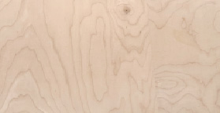
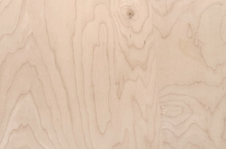
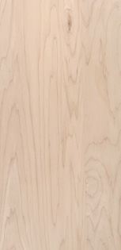

Even if you've never built anything before, you can build yourself a chair. You might doubt yourself at first, maybe even compare yourself to someone who has built a chair before. You might think you need complex tools and years of experience to make a chair. But a chair can be a simple thing. A chair doesn't have to be new or shiny, or have features that no other chair has. A chair can look and work like any other chair. A chair can be made with simple tools. A chair can be made from repurposed scrap wood. A chair can be made with accessible knowledge.What matters most is that you build a chair.
A chair doesn't have to be new or shiny, or have features that no other chair has. A chair can look and work like any other chair. A chair can be made with simple tools. A chair can be made from repurposed scrap wood. A chair can be made with accessible knowledge.What matters most is that you build a chair.
For one reason or another, you noticed that you want a chair. Maybe you'd like a place to sit at while you write or eat breakfast. Maybe you'd like a place to sit while you enjoy the weather on your front porch. But instead of wanting to buy a chair from a store or second-hand, you made the wise choice to ask, "what if I built a chair?".Maybe you'll learn a new skill. Maybe you'll feel accomplished once it is done. Maybe you'll regain a sense of agency that's been lost. A mass-produced chair might be expensive. A mass-produced chair may have been made unethically, with exploited labor from a country far away. A mass-produced chair may have taken boat rides across oceans to get to you. But a chair you made yourself is just that, a product of your own labor.A chair you made yourself shows that you have the ability to shape your own environment. That some simple tools like a handsaw, hammer and nails, can help you to do something you weren't able to do before. When you make a chair yourself, no matter how simple or crude, you taught yourself something important.
But a chair you made yourself is just that, a product of your own labor.A chair you made yourself shows that you have the ability to shape your own environment. That some simple tools like a handsaw, hammer and nails, can help you to do something you weren't able to do before. When you make a chair yourself, no matter how simple or crude, you taught yourself something important.
That you can build a chair! Maybe making a chair is less about the thing, and more about the action.
Maybe making a chair is less about the thing, and more about the action.